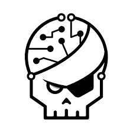
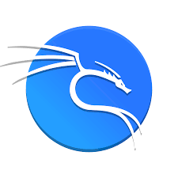
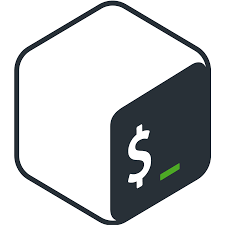
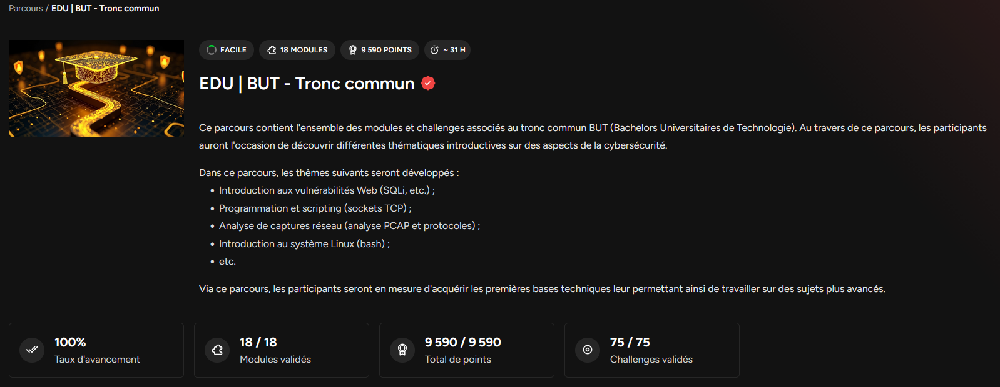

Résumé de la SAESAE Summary
Cette SAE avait pour but de nous faire découvrir le The goal of this SAE was to introduce us to pentesting via des challenges de type through CTF (Capture The Flag). Le but de ces challenges est d'obtenir une ligne de texte (le flag) en réalisant une tâche se rapprochant, par exemple, de l'exploitation d'une faille dans un environnement volontairement vulnérable. challenges. The objective of these challenges is to obtain a text string (the flag) by performing a task similar to, for example, exploiting a flaw in a deliberately vulnerable environment.
Nous avons eu accès à la version pro de We had access to the pro version of Root-Me, qui propose un parcours adapté au BUT Réseaux et Télécommunications (Parcours EDU | Tronc commun). Ce parcours est constitué de , which offers a path adapted to the Networks and Telecommunications Bachelor's degree (EDU Path | Core curriculum). This path consists of 18 modules, regroupant au total , grouping a total of 75 challenges permettant de découvrir différentes thématiques introductives sur des aspects de la cybersécurité. allowing us to discover various introductory topics on aspects of cybersecurity.
Environnement et OutilsEnvironment and Tools

Root-Me
Plateforme d'apprentissage dédiée au hacking et à la sécurité de l'information proposant des environnements vulnérables.Learning platform dedicated to hacking and information security offering vulnerable environments.

Kali Linux
Distribution GNU/Linux orientée sécurité et pentest, utilisée pour exécuter les divers outils d'analyse et d'exploitation.GNU/Linux distribution oriented towards security and pentesting, used to execute various analysis and exploitation tools.
Python
Langage de scripting utilisé pour automatiser des tâches complexes ou interagir avec des sockets TCP.Scripting language used to automate complex tasks or interact with TCP sockets.
Wireshark
Analyseur de paquets réseau utilisé pour disséquer des fichiers PCAP et récupérer des informations sensibles.Network packet analyzer used to dissect PCAP files and retrieve sensitive information.
Outils Web Web Tools
Compréhension des requêtes HTTP, manipulation des cookies, du code source et exploitation de failles type SQLi ou XSS.Understanding HTTP requests, manipulating cookies, source code, and exploiting flaws like SQLi or XSS.

Système Linux (Bash) Linux System (Bash)
Utilisation des commandes de base, gestion des permissions et élévation de privilèges en environnement Bash.Use of basic commands, permission management, and privilege escalation in a Bash environment.
Avancement sur la plateformeProgress on the platform

Thématiques abordéesTopics Covered
1. Vulnérabilités Web1. Web Vulnerabilities
Introduction à la sécurité des applications web. Exploitation de vulnérabilités classiques telles que les injections SQL (SQLi), les failles XSS, ou encore le contournement d'authentification.Introduction to web application security. Exploitation of classic vulnerabilities such as SQL injections (SQLi), XSS flaws, or authentication bypass.
2. Programmation et Scripting2. Programming and Scripting
Création de scripts d'automatisation. Utilisation des sockets TCP en Python pour interagir dynamiquement avec des services distants afin de résoudre des problèmes mathématiques ou logiques en temps limité.Creation of automation scripts. Use of TCP sockets in Python to dynamically interact with remote services to solve mathematical or logical problems within a time limit.
3. Analyse Réseau3. Network Analysis
Étude approfondie de captures réseau (fichiers PCAP) à l'aide de Wireshark. Compréhension de l'encapsulation, analyse des protocoles et extraction de données en clair telles que des identifiants.In-depth study of network captures (PCAP files) using Wireshark. Understanding encapsulation, protocol analysis, and extracting cleartext data such as credentials.
4. Système Linux4. Linux System
Navigation en ligne de commande, compréhension de la structure des permissions sous Linux, et exploitation de mauvaises configurations pour effectuer des élévations de privilèges.Command-line navigation, understanding the Linux permission structure, and exploiting misconfigurations to perform privilege escalations.
Compétences validéesValidated Skills
Cette SAE s'inscrit pleinement dans le parcours Cybersécurité du BUT et permet de valider les apprentissages suivants :This SAE is fully in line with the Cybersecurity track of the Bachelor's degree and validates the following learnings:
- AC21.04 Exploiter les vulnérabilités d’un système informatique ou d'une application web. Exploit the vulnerabilities of a computer system or a web application.
- AC22.01 Identifier les menaces et vulnérabilités d’un système (analyse de flux et de code). Identify the threats and vulnerabilities of a system (flow and code analysis).
- AC13.02 Lire, exécuter, corriger et modifier un programme (scripting d'automatisation). Read, execute, correct, and modify a program (automation scripting).
- AC13.01 Utiliser un système informatique et ses outils en ligne de commande (Kali Linux, Bash). Use a computer system and its command-line tools (Kali Linux, Bash).
Analyse réflexiveReflective Analysis
Au cours de cette SAE, j'ai pu consolider mes bases dans de nombreux domaines et découvrir de nouvelles notions car ces challenges s'appuient sur des techniques précises. Cette approche invite à la recherche de documentations ainsi qu'à l'entraide en étudiant, et j'ai apprécié l'approche très concrète de cette SAE. J'ai pu lors de celle-ci terminer l'ensemble des 75 challenges proposés. During this SAE, I was able to consolidate my foundations in many areas and discover new concepts because these challenges rely on specific techniques. This approach invites research into documentation as well as mutual aid while studying, and I appreciated the very concrete approach of this SAE. During it, I was able to complete all of the 75 proposed challenges.